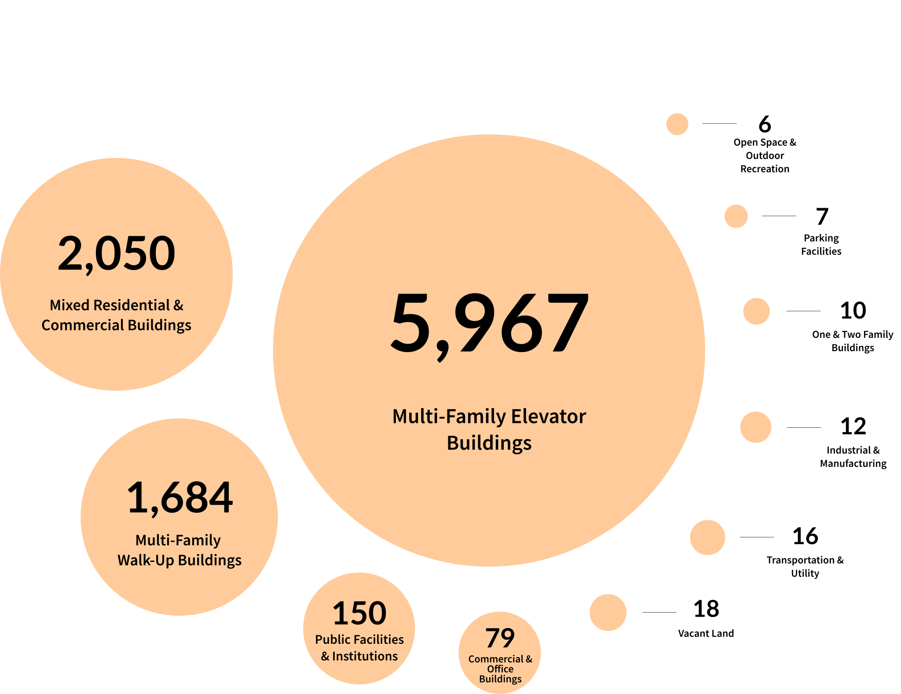

The terrible onslaught of fires in New York on Thanksgiving weekend caught my attention. Since the city's database is open and extensively recorded, I was able to look for trends and factors that might explain where or why these fires occur. I was itching to make a mapping visualization and obtained census data to that effect.
Project Type: {{ page.type }}
Role: data storytelling, data visualization
Tools: Python(Jupyter) for data, Illustrator and Plotly for graphics
Date: December 2022
Sources: NYC Open Data, CDC/ATSDR census data
Nearly 85% of all elevator buildings in Brooklyn have been served one or more notices of violation related to fire codes by the city's Department of Housing Preservation and Development (HPD) in the past four years. These include an 80-unit building with 135 violation orders (24 of which are open) and 26 buildings on Ridge Boulevard in Brooklyn, where a woman was critically injured in a fire last week.
Community districts in Southern Brooklyn have the most elevator buildings with fire code violations
Elevator buildings with violations by Community District (normalized for population), 2019-2022
Data: NYC Open Data, CDC/ATSDR census data
The Fire Department of New York responded to 13,973 emergencies related to structural fires in 2021. Right now, 19,043 buildings have open fire code violations with the HPD. About 600 of these are classified as "immediately hazardous", the most severe class of housing code violations. These violations range from defective smoke alarms to damaged self-closing doors and obstructed fire escapes.
Multi-family elevator buildings over 2x more likely to have fire code violations than any other category
Types of buildings for every 10,000 violations (normalized), 2019-2022
Data: NYC Open Data
While multi-family elevator buildings were the most likely to have fire code violations, one and two-family buildings accounted for the lowest number of violations of any kind of occupied structure – even lower than vacant land. This could be attributed to the fact that this category is not subject to some fire safety codes, like the self-closing door rule. And because most of the structures in Staten Island are one and two-family apartments, it has the fewest number of buildings with fire code violations overall.
As of December 2022, over 9,000 elevator buildings have open violations, some of them active since January 2019. 395 of these are rent-impairing, which if not corrected soon will be "a fire hazard or a serious threat to the life, health or safety of occupants". On reinspections, HPD has found that 766 buildings have not yet complied with their notices of violation. HPD was unable to access 606 buildings for reinspection, and 358 buildings sent in invalid certifications.